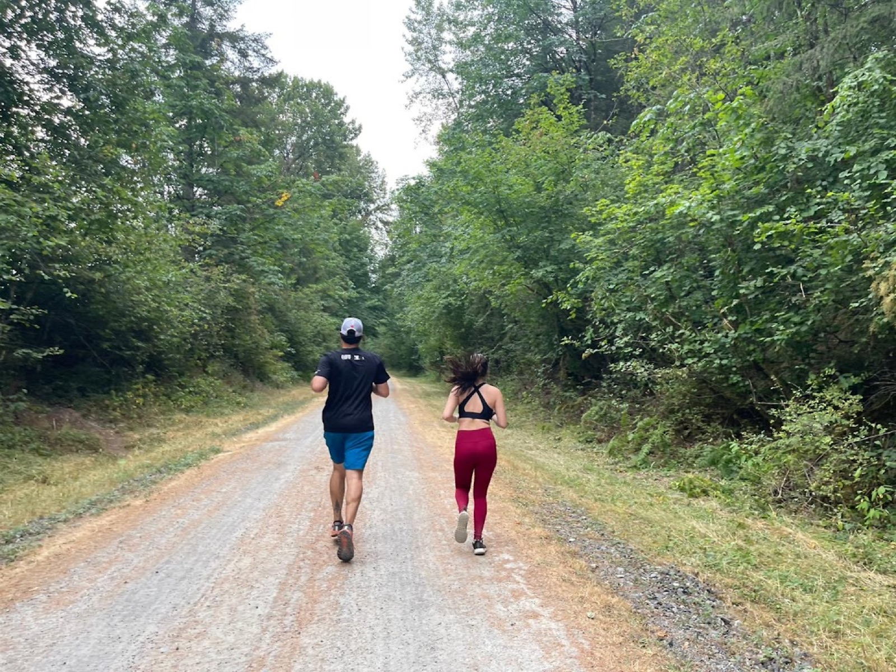

Road to the TCS London Marathon
26.2 miles.
One line, run one day at a time.
Tracking every training mile, medal, and milestone between now and race weekend — 24–25 April 2027.
until the start line in London
The mission
From first mile to finish line
This page follows one runner's build-up to the 2027 TCS London Marathon — the training blocks, the easy miles, the long runs that don't feel easy at all, and the races along the way that turn "someday" into a start-line date. No shortcuts, no fixed pace — just consistent miles banked one run at a time.
This is the chubby.run journey from couch to marathon.
- Goal raceTCS London Marathon — 25 April 2027
- Training window trackedJanuary 2026 → race day
- Data sourceLive from Strava, refreshed daily

By the numbers
Training progress
Pulled straight from Strava and refreshed every day — last synced —.
Predicted marathon finish
Riegel's formulaWaiting for recent runs since January 2026…
Weekly distance
Cumulative distance
Monthly elevation gain
Average pace trend
Everywhere the miles happened
Activity map
Every mapped run since January 2026. Click a route for details.
On the road
Gallery
Moments from training runs and race days.
Earned, not given
Medal case
Every finish line crossed on the way to London. Hover — or tap — a medal.